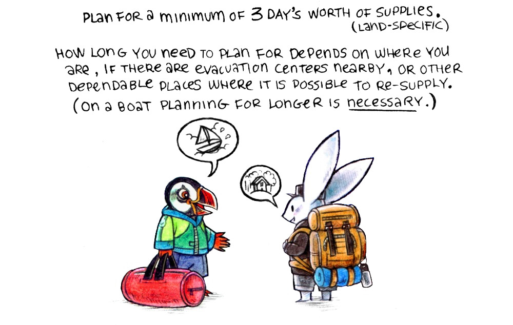
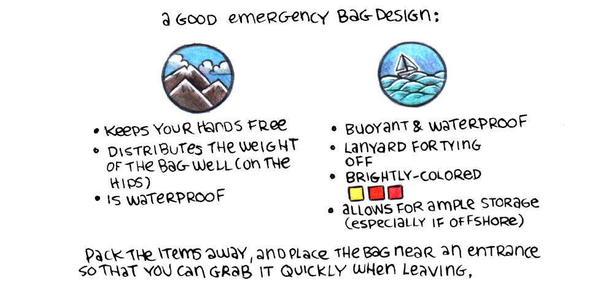
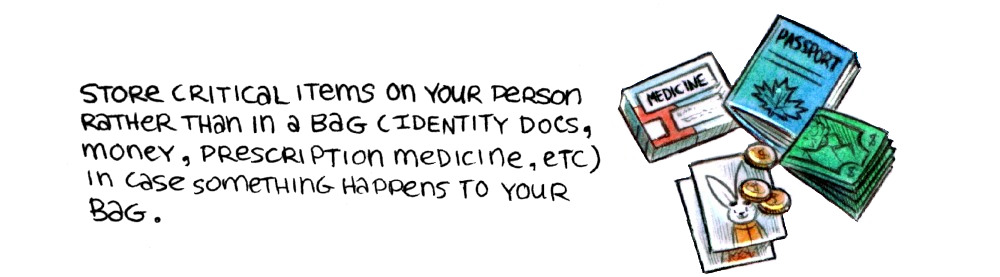

An emergency bag, or abandon ship bag, contains emergency supplies for when it is necessary to leave the home/vessel in a hurry in the event of a disaster. The bag ought to contain the minimum essentials. What is essential varies per person, and so it is important to pack what you need yourself, considering each item carefully, instead of following a list.

Plan for a minimum of 3 days' worth of supplies. How long you need to plan for depends on where you live, if there are evacuation centers nearby, or other dependable places where it is possible to re-supply. (On a boat, planning for longer is necessary).
Radio, sextant, navigation tables(for sextant), current almanac(for sextant), pencil, notepad, stitching awl(and or) needle and thread, polarized sunglasses, flares, fish line and hooks, watch, personal location beacon (and or epirb), sunscreen, toothbrush, toothpaste, first-aid kit, spoon, multi-tool, bug spray, waterproof matches, paracord, emergency blanket, toilet paper, lighter, medicine, compass, mirror, hand sanitizer(or soap), batteries, tarp(or tent), multivitamins, candles, towel, whistle, gloves, rain jacket, duct tape, cup, water(3L per person), map(physical), blanket(or sleeping bag), knife, serrated knife, flashlight, rope, high-calorie foods, bowl, portable cooking stove(and fuel), ID, money, photos of family/friends.
Mutual Aid

Some items ought to be shared by a group, carried in additional bags (ex: cooking stove, bucket toilet etc). A good bag design: 1) Keeps your hands free. 2) Distributes the weight in the bag well (on the hips). 3) Is waterproof. Pack the items away, and place the bag near an entrance so that it is possible to grab it quickly when leaving.

Store critical items on your person rather than in the bag (identity documents, money, prescription medicine, etc), in case the bag goes missing, or is stolen.
Take the time to make a plan before disaster strikes. Talk to your neighbors, make a plan together. The combined efforts of the community is important to overcome a disaster. Become aware of people in your community with special needs: Expectant mothers, children, those with illnesses or disabilities. When a disaster occurs, check on your loved ones and neighbors, in case they need your help.

![drawings of examples of items that sometimes come in an emergency bags: Radio, sextant, navigation tables(for sextant), current almanac(for sextant), pencil, notepad, stitching awl(and or) needle and thread, polarized sunglasses, flares, fish line and hooks, watch, personal location beacon (and or epirb), sunscreen, toothbrush, toothpaste, first-aid kit, spoon, multi-tool, bug spray, waterproof matches, paracord, emergency blanket, toilet paper, lighter, medicine, compass, mirror, hand sanitizer(or soap), batteries, tarp(or tent), multivitamins, candles, towel, whistle, gloves, rain jacket, duct tape, cup, water(3L per person), map(physical), blanket(or sleeping bag), knife, serrated knife, flashlight, rope, high-calorie foods, bowl, portable cooking stove(and fuel), ID, money, photos of family/friends.](../media/content/emergency_bag.jpg)